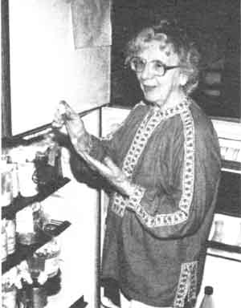
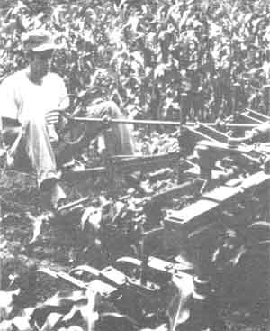
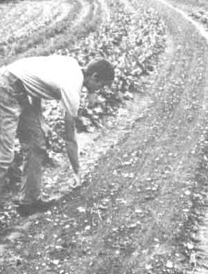
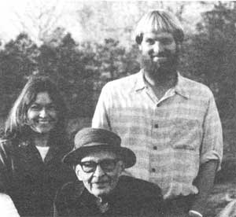

Practical? Spiritual? Straightforward? Enigmatic? MOM's staff attempts to pin down . . .
PLOWBOY: Can you tell us about the specific biological techniques you've worked out for your orchard? What do you use instead of the conventional sprays and fertilizers?
THOMSON: We first treated the land with a biodynamic field spray developed by Dr. Eh-renfried Pfeiffer, the renowned biochemist and biodynamic pioneer.
-"A.P. Thomson:
Successful Organic Farming . . . for 30 Years!" (issue 67, page 16)
RITA: Often cash grain farmers will ask us what they can use to make compost, since they don't have a source of manure. We tell them that decomposed cornstalks can produce as good a compost as any barnyard manure, especially if you use the BD starter.
PLOWBOY: What is BD starter?
RITA: It is an inoculant that has 55 strains of bacteria in it ... we've found that it can decompose just about anything.
- "Ralph and Rita Engelken:
Unlocking America's True Wealth" (issue 84, page 19)
Barb and Kerry also take other steps to nurture their tender seedlings . . . for example, they spray the plants on alternate weeks with a biodynamic root-growth preparation and another that enhances light absorption.
-"A Year in Mom's Solar Greenhouse" (issue 84, page 38)
Margrit Selke with one of the dozens of bacterial cultures in DB compost starter
As these three quotes illustrate, the term biodynamics (or BD) has more than once graced these pages. Two of our "Plowboy Interview" subjects - both long-term successful organic farmers - make regular use of some of the techniques and tools of this little-known school of agriculture. And bringing the point even closer to our own home, Barbara and Kerry Sullivan, the horticulturists who created our beautiful Eco-Village gardens, have - over the course of the past few years - become increasingly interested in biodynamics. In fact, the couple has now left MOTHER altogether . . . in order to study this method full-time at Emerson College in England. Furthermore, while BD is quite a small movement in this country, it's reputed to be the largest organic growing school in Europe. There's even a commercially marketed line of biodynamic foods available on the continent-called Demeter-that's renowned for its high quality!
But just what is biodynamics? All that most people who've ever heard of BD know is that the name is often tied to some reputedly effective wholistic sprays, inoculants, or preparations. The fact that the word crops up in the title of a better-publicized approach to horticulture, biodynamic/ French intensive gardening, tends to confuse the issue ... because that method (created by Alan Chadwick and championed today by John Jeavons) isn't closely connected to either of its namesakes.
However, since our own gardeners had become such avid BD adherents, the rest of us folks at MOTHER have been very curious to learn just what this "exotic" agricultural method is all about. So we've spent hours studying literature on the subject and talking with the Sullivans. We even sent a staffer to Threefold Farm in Spring Valley, New York to interview Peter Escher, the cheery-and elfish-BD agricultural consultant who first urged the Sullivans to explore this "other" organic method.
And do you know what? After all of our work, we're still not positive we can offer an all-inclusive definition of the word! Biodynamics, it seems, combines down-to-earth agricultural advice . . . a noble ecological purpose . . . and an unusual spiritual/scientific viewpoint into a philosophy of horticulture that's complete and complex. Consequently, while we'll do our very best to spell out the concepts of this method as clearly and honestly as we can, we can't really guarantee that we'll get it all right. So let's just say that the following is MOTHER's considered opinion concerning biodynamics. If what we report whets your interest, you're welcome to check out the materials and resources listed at the end of this feature and form your own assessment. Better yet, try out some BD methods, and let your results help you decide which-if any-aspects of biodynamics appeal to you.
THE BASICS
Let's start by trying to lay down some of the mainstays of this agricultural method. According to Dr. Ehrenfried Pfeiffer-the man who brought the method to America and developed the popular biodynamic compost starter and field spray-the first two BD principles are [1] "to restore to the soil the organic matter which it needs so badly in order to hold its fertility . . ." and [2] "to restore to the soil a balanced system of functions. This requires our looking at the soil not only as a mixture or aggregation of chemicals, mineral or organic, but as a living system".
In other words, Pfeiffer primarily focuses on creating good, stable humus: soil that is nutrient-rich, contains lots of "life-giving and life-maintaining energies", and has good physical structure. Along with that, though, he stresses such standard organic principles as practicing proper crop rotation, using leguminous cover crops, establishing solid erosion control, and creating a well-balanced, largely self-contained farm ecosystem that includes an appropriate number of livestock.
On the other hand, some biodynamic adherents stress the more theoretical principles of the method. Sherry Schwartz, editor of The Kimberton Hills Agricultural Calendar, notes that "agricultural practices should reflect our insights into the principles of life which manifest in Nature. Current agricultural practices, however, tend to derive their techniques from an approach to science which is schooled not by observation of life but of dead physical processes". Wolf D. Storl, author of Culture and Horticulture, puts the same thought another way: "Living processes must be understood by living thoughts."
This type of gestalt thinking is derived in part from the ideas of the German poet/ scientist Johann Wolfgang von Goethe. As Storl says, "Goethean science relies on careful empirical observation and adds to it the proper concepts. Goethe rejects simplistic empiricism, which gives only an aggregate of isolated facts."
But along with inspiring such wholistic theorization, biodynamics also incorporates spiritual thinking. As Barbara Sullivan told us, biodynamic growers are learning to work "not only with the physical world of nature, but also with the spiritual forces from which the world has been formed". While Wolf D. Storl would say it takes "a loving sympathy", a "meditative approach", and trained "inner perception" to directly perceive such formative-or ethe ric -forces, there are clear and specific biodynamic techniques that are said to help any grower maximize the role of such influences on his or her crops.
Perhaps another way to help clarify what biodynamics stands for is to distinguish the ways in which it differs from other organic practices . . . the reasons why Pfeiffer Says BD has been said to include "the cream of organic farming principles". In Storl's view, biodynamics takes "a much wider scope into account, including the sun, the moon, planets, and subterranean features, in its effort to understand the totality of all factors". It also incorporates the grower's own consciousness . . . "calls for not letting things run their natural course, but for intensifying certain natural processes" ... and-as an important fundamental-focuses on "putting one's energies into supporting the good, rather than into fighting the bad". (To exemplify this last statement, Storl states that "spraying bugs ground up in a blender, using trichogramma wasps, etc., is treating the symptom, whereas building the soil and one's relationship to the land is treating the problem".) Finally, biodynamics sees itself as a desperately needed human service offered to a dying earth, "aiding nature where she is weak after so many centuries of abuse".
Still, while some BD adherents work assiduously to explain the theoretical underpinnings or special qualities of this agricultural method, others-like Pfeiffer-keep their efforts homed in on its practical, everyday aspects. Our friend Peter Escher, for instance, deliberately avoids fancified concepts. "Don't start out by reading about biodynamics," he urges. "You should first observe very quietly and carefully what is going on with your crops and soil. You see, if you come right down to brass tacks, people don't look. Biodynamics is not simply using this spray and that stuff, it's thinking for yourself. I would never want to work with someone who takes everything for granted."
So here's how Peter describes the basics of biodynamics: "What you want to do is create a stable humus. Now you can read a lot of books about soils, but the quickest definition I know of for a stable humus is `what comes out of the business end of an earthworm'! Most growers don't think in those terms. They ask `What spray schedule do you use?' That is completely misleading. The guy who's on the right track is the one who grabs me by the scruff of the neck, takes me out to his apple orchard or whatever, and shows me how he handles his soil!"
The other clear-cut fundamental in Escher's eyes is that the grower should maintain an attitude of "intensive reverence" for the land. "The most important rule in farming is that a good farmer prays, while a `tractor operator' doesn't. I don't care whether that grower even uses commercial or toxic sprays. If he's devout, if he realizes there's something in the soil that's greater than he is, he'll get a touch for the land and go on to learn what to do and when."
AIDS ON THE WAY
Indeed, Peter probably has pinned down the two most important principles of biodynamics: That one works at creating a stable, living humus and strives to cultivate the spiritual aspects of growing. Of course, a lot of good agriculturists who don't know the first thing about BD are dedicated to those two ideals. It's not surprising, then, that much of biodynamic literature does consist of solid advice that any good organic grower would agree with. (Peter, in particular-having made a living for decades as a traveling agricultural consultant-has always struck us as a fount of down-to-earth horticultural wisdom.)
But biodynamic growers also truly feel that their techniques are an improvement on any "get things back to what they were before modern agriculture messed them up" organic methods. BD proponents are deliberately trying to make the soil superior to what it would ever be naturally.
One of the primary techniques they use to achieve this goal is composting. Now BD agriculturists don't just heap a bunch of organic leftovers together and let them rot at random. No, as Pfeiffer proudly proclaims, the biodynamic method "stands for a truly scientific way of producing humus". Proponents claim to have researched the ideal settings, sizes, shapes, moisture contents, ingredient combinations, temperatures, shieldings, and so on, that yield the most beneficial microorganisms and highest concentrations of usable nutrients in the finished product.
In addition, biodynamic growers use some unique tools that are crucial to BD composting . . .
THE PREPARATIONS AND COMPOST STARTER
There are nine preparations, all of which are very specially treated organic substances that are supposed to be highly beneficial to agricultural processes even though they're used in extremely small doses. These are numbered-for no particular reason that we could discover-500 through 508. Numbers 502-507 (made from yarrow blossoms, chamomile blossoms, stinging nettle, oak bark, dandelion flowers, and valerian flowers, respectively) are all employed in composting. However, they are difficult to make or use. Fortunately, a few decades ago Dr. Pfeiffer combined these six substances with a few dozen specific bacterial cultures, enzymes, preparation 500, and "plant growth promoting factors" into BD compost starter. This aromatic powder is quite easy to use and is readily available to the public.
The starter is employed in quite small doses: One ounce of the powder, dissolved in water, treats one ton of compost. Pfeiffer compares the compost helper's function to the yeast you use when making bread. You could mix all the ingredients of your dough and then set your loaves outside, figuring that some wild airborne yeast bacteria will come along and-over time-properly "inoculate" your loaves . . . but the odds are high that you wouldn't end up with the food product you were hoping for!
A BD grower, like a sensible breadmaker, chooses to direct the fermentation process by introducing the proper "yeast". The starter cultures then should quickly decompose the raw organic matter into simple compounds and reassemble those compounds into long-lasting humus that will hold its structure . . . resist leaching . . . help fix nitrogen ... and increase the availability of minerals.
But does the compost starter work? Well, those members of MOM's staff who've tried it wholeheartedly proclaim that the answer to that question is yes. Barbara and Kerry-ardent composters who made 15 tons of the soil amendment each year-first used the powder at Peter's urging. They found that their piles' ingredients broke down more quickly and thoroughly than ever before, yielded humus with a lighter, more friable texture, and even ended up smelling better! That success inspired them to look further into biodynamics.
Then too, the Engelkens-who have been farming organically for over 25 years fertilize 387 acres with compost . . . and all their homemade humus is "brewed" with BD starter.
Another easy-to-use Pfeiffer creation that combines preparations and bacterial cultures is the BD field spray. One four-ounce unit of this product is dissolved in water and then sprayed onto stubble or a cover crop before that plant material is turned into the soil. The substance, which supposedly functions as a sort of "in place" composting aid, is said to help the green matter decompose quickly, shortening the period during which it ties up soil nutrients.
A.P. Thomson-who's grown apples organically for three decades-says he's had success with the field spray. And Kerry and Barbara note that while their turned-under cover crops ordinarily took six weeks to break down, those treated with field spray rotted completely in half that time.
Of course, since both the compost starter and field spray contain dozens of ingredients, their efficacy doesn't necessarily have to be due to the biodynamic preparations they contain. So it's a fair question to ask how well those special substances work by themselves.
Once again, friends of ours vouch for the products. Ironically, Peter Escher was first "converted" to biodynamics himself when he had a composting experience similar to that which he provided for the Sullivans . . . only Peter was using the preparations, not the starter. He made six compost piles, three using numbers 502-507 and three without those substances. After the mounds had aged, he asked Dr. Pfeiffer to tell him which were which. Pfeiffer not only identified each preparation-assisted pile correctly but gained a valued colleague-Peter Escher-in the bargain.
Down here in our own backyard, Kerry and Barbara Sullivan have, for the past couple of years, been using preparation 500 (made from cow manure) to enhance root growth in their spring seedlings . . . 501 (made from ground quartz) to promote light absorption in certain crops .. . and 508 (made from the horsetail plant Equisetum arvense ) to help prevent fungus problems. Barb and Kerry say all three substances have made observable differences in their crops.
In addition, there's a large body of biodynamic experimental literature to back up the overall effectiveness of the preparations.
Pragmatic Peter Escher would pooh-pooh all such evidence and anecdotes-including his own story-saying, " You do it. Find out for yourself what works." And ultimately, of course, he's right. You don't have to accept testimonials . . . even those of MOTHER's gardeners. The best way to learn if any, or all, biodynamic methods hold up is to try them out for yourself. ("Not just try them," Peter would add, "really do them! There are too many putterers in the world already!")
Yet while the "proof of the pudding" is up to you, we can help you learn a bit more about just what the preparations are. . . by examining how one of them is made and what it's supposed to do.
NUMBER 500
The horn-manure preparation, Number 500, is made by packing fresh manure into a cow's horn in the fall and burying it two feet underground. After the horn is unearthed the following spring, a pea-sized portion of the decomposed dung is mixed in a bucket of rainwater for one hour, with the mixer switching the direction of stirring every time a vortex is created. The liquid is then sprayed or whisked onto the planting soil where the grower wants to promote root development.
Now that description may sound like a kind of "voodoo horticulture" to some people, but biodynamic agriculturists see a logical basis for each step in the process. They use cow manure, for instance, because-having passed through the four-chambered, 120-foot bovine digestive system-it contains a host of digestive secretions, intestinal flora, and "beneficial energies". The cow's horn itself is seen as a special device that concentrates the plant energies in the beast. The packed horn is buried over winter since that's the season when the earth's energies are most concentrated in the ground (in summer, those energies extend upward, promoting plant growth). The growers then use only a minute portion of the ripened dung at one time because the entire process has " potentized "-or " dynamized "-it so that a small amount is all that's needed. Last, preparation users mix the little "pea" vigorously in water to promote full oxidation, an active relationship of the grower to the preparation, and further enlivenment of the substance by cosmic forces.
NONMATERIAL INFLUENCES
You've probably noticed that we've used a lot of words like "beneficial energies", "formative-or etheric-forces", and "potentizing" in this article. Such terms reflect the fact-mentioned earlier-that one of this method's primary goals is to promote the grower's spiritual relationship to the land. BD theory maintains that a lot of unseen energies stream down to earth from the sun and other heavenly bodies. These etheric forces are supposed to greatly affect the quality of what is grown and the health of the people who eat it. Thus, while one hand of this agricultural philosophy is devotedly practical-minded, the other one is working to cultivate cosmic, formative energies.
Actually, many (if not all) biodynamic practices combine the two goals. The compost preparations or starter, for example, are meant to enliven the soil in both the physical sense (boosting populations of beneficial soil microlife) and in the etheric sense (increasing the cosmic energies of the soil). The biodynamic growers' emphasis on producing high-quality food can likewise be taken on two levels. They want to raise nutrient-rich vegetables that keep well and taste good (Escher theorizes that so many people are obese today because they eat such poor-quality food that they never feel truly fed. . . so they continually stuff more of it into their mouths). And such agriculturists want to produce food that will help increase people's will to carry out socially and spiritually redeeming acts. As a last illustration, the very name biodynamics means "working with the energies which create and maintain life" . . . a definition that encompasses both of these aspects.
In keeping with the spiritual tenets of this method, BD growers try to plant and take care of their crops according to a cycle of cosmic rhythms (as experienced from our geocentric position): the phases of the moon, the position of the stars and planets, and the movement of the sun through the series of twelve constellations that's known as the zodiac. Although this may sound like astrology, it is somewhat different. That "sign reading" method is based on the positions of the zodiac constellations as they were a couple of thousand years ago . . . biodynamic cosmology, though, hinges on those star groups as they are visible in the sky today. (For example, in 1984 the sun will be traveling through Taurus from May 13 to June 19 . . . although astrologers still claim the time of the Bull extends from April 22 to May 22.)
BD astronomy is not limited to simple axioms about planting your root crops in the waning moon (and the like), either. Far from it. Researchers such as Maria Thun and Eugene and Leo Kolisko have done more than 30 years of detailed experimental study regarding the relationships between celestial bodies and crop growth. The everyday conclusions from all this research, compiled in the thorough but easy-to-use annual Kimberton Hills Agricultural Calendar, shows which specific days (and hours) are judged best for working on the leaf, root, fruit, or flower portions of crops.
We don't have space to cover all of the larger aspects of biodynamics, but even the small amount of information shared here most likely brings up the question "Where did this whole systemized approach ever come from?" Interestingly enough, it was started-even before Sir Albert Howard founded standard organic agriculture-entirely by one man.
S TEINER
In 1924, a group of farmers approached the Austrian philosopher Rudolf Steiner to ask his solutions to problems they were facing with the degeneration of their seed stock and increased animal and plant disease. Steiner answered these queries by giving a series of eight lectures (printed in book form today under the title Agriculture) in which he spelled out the major ideas of biodynamics. He said then:
We must vitalize the earth directly, and this we cannot do by merely mineral procedures. This we can only do by working with organic matter, bringing it into such a condition that it is able to organize and vitalize the solid earthy element itself. To endow the mass of manure . . . with this kind of quickening or stimulus, is precisely the object of those inspirations [the biodynamic preparations] which we are able to give to agricul ture out of spiritual science. The living forces are far more important for the plant than the mere substanceforces or substances.
For all that, Steiner was not primarily an agricultural teacher. Instead-in thousands of lectures and scores of books-this wideranging thinker dealt with art, education (he founded the Waldorf schools), expressive movement (he invented a type called Eurythmy), architecture (he designed an amazing building in Switzerland called the Goetheanum), and many other areas. His all-encompassing concept was anthroposophy (literally, "the wisdom of man"), a religio-scientific framework he worked out to "lead the spiritual in man to the spiritual in the cosmos". Anthroposophy centers on Goethean scientific philosophy and a "Christian Occultism" that incorporates an array of spiritual beings, reincarnation, and clairvoyance with a dedicated-if nontraditional-belief in Jesus Christ.
But while the founder of anthroposophy is the same man who founded biodynamics, the agricultural method can stand perfectly well on its own. The people we consulted all agreed that-as the textbook Bio-Dynamic Agriculture phrases it-"one does not have to be an anthroposophist in order to apply [this] method". Why, as we've already noted, some BD people don't like to spend time on the philosophical aspects contained wiihin biodynamics itself. As Peter Escher put it, "I worked with Dr. Pfeiffer for 25 years, and he mentioned the phrase `etheric forces' to me once in all that time!" Besides that, it's possible for an individual to find some biodynamic aids useful without becoming concerned with other portions of this method. Neither Ralph nor Rita Engelken, for instance, said a word about biodynamics per se during our entire interview with them, but they obviously are gung-ho supporters of BD compost starter.
YOUR TURN
If you think you'd like to give this organic alternative an honest trial yourself, here's the "getting started" plan of action that Peter recommends:
What you should do first is make a biodynamic compost from cow or horse manure and work that into your land. Do this in the fall if you can, when you're not as busy as in the spring. Make a soil profile early on, too, by digging a hole and grubbing back and forth in there with a jackknife to see how deep your plants' roots go. If they only reach down four or six inches, do something to overcome that. The Sullivans dealt with their subsoil by double-digging. Me, I would use a chisel plow or subsoiler. If you don't have those, you can use white sweet clover ( Melilorusalba). It grows six feet tall and has very penetrating roots. The heavier your soil is, the more tillage you'll want to achieve to get your roots and compost down deeply.
Keep feeding your soil with your compost, and if you have any plants to plow under, use the field spray, too. Then I'd recommend using the preparation 500 before planting to get a better root system as quickly as possible. You would apply that in the latter part of the spring, after the crops are in. Later on, you would use 501 to expedite ripening.
I would hold off planting by The Kimberton Hills Agricultural Calendar until the second half of that year. By July, you should be halfway decently established and able to give some attention to that and other refinements. I'd also recommend trying to keep some sort of record of what you're doing. Then, if something doesn't do too well, you'll know what you did wrong.
That's important. When I started farming, I made all of the common mistakes and invented a few more. I did a thorough job of making mistakes. And then, as I kept fiddling along on the farm, one day I took some soil and looked in my hands and saw that it was alive. There was organic matter in there that had decomposed and formed a humus. I said, "Ali, it can be done!" From that moment on, I was hooked.
Maybe you will be, too.
Compost starter: A one-ounce packet of BD compost starter, along with a four-page instructional leaflet, is available for $4.75 plus $1.00 shipping and handling from The Pfeiffer Foundation, Dept. TMEN, Threefold Farm, Spring Valley, New York 10977. This will treat one ton of compost.
Field spray: One unit (four ounces) of BD field spray, with a two-page instructional brochure, is sold for $12 plus $1.50 shipping and handling by The Pfeiffer Foundation at the address given above. This will treat one acre of cropland.
Preparations: The preparations themselves are in limited supply in this country and only available from Josephine Porter, Dept. TMEN, RD 1, Stroudsburg, Pennsylvania 18360. She is willing to sell them to MOTHER'S readers "on a trial basis if they will use them conscientiously and if they first read biodynamic literature on how to use them properly".
A complete set of preparations 502-507, the compost preparations, can be obtained from Ms. Porter for $6.00 postpaid. One unit of preparation 500 costs $2.85 postpaid . . . 501 is 65 cents postpaid . . . and 508 goes for $2.25 postpaid. The two booklets she most recommends reading to learn how to use the substances are H.H. Koepf's Compost: What it is, How it is made, What it does (which gives information on 502-507) and Bio-Dynamic Sprays (which discusses 500, 501, and 508). The guides are available from Ms. Porter for $1.50 and $1.10, respectively . . . please include
$1.50 per order for shipping and handling.
The 1984 Kimberton Hills Agricultural Calendar can be ordered for $7.00 postpaid from Kimbenon Hills Publications Dept. TMEN, P.O. Box 155, Kimberton, Pennsylvania 19442.
Other books on biodynamic agriculture are available from Bio-Dynamic Literature, Dept. TMEN, P.O. Box 253, Wyoming, Rhode Island 02898. Please include 50 cents for shipping and handling on all book orders totaling less than $5.00. Here are some of the firm's noteworthy introductory and detailed guides:
What is Biodynamic Agriculture? ($2.00), Three Lectures on Biodynamics ($1.60), and Biodynamics: Three Introductory Articles ($1.50) are booklets that outline the main principles of this gardening method.
Culture and Horticulture ($10) is Wolf Storl's fascinating 435-page discussion of the philosophy of BD agriculture.
Bio-Dynamic Agriculture ($16) is the textbook on BD farming. Its 429 pages encompass studies and methodology.
The eight lectures in Rudolph Steiner's Agriculture ($9.50) sparked the inception of biodynamics (they are definitely not beginner material).
Finally, the Bio-Dynamic Association (at the same Rhode Island address listed above) publishes the quarterly journal Bio- Dynamics ($2.50 an issue, $10 a year), which includes the addresses of regional BD groups.
EDITOR'S NOTE: We would like to thank Peter Escher, Barbara and Kerry Sullivan, R. Otto Wylie, and lames Baraushy for all their assistance in teaching us about biodynamics.
|
 STAFF PHOTOS At the biodynamic Threefold Farm in Spring Vallely, New York, ""Mac"" Meade is developing tractor implements that make permanent raised beds and that cultivate young crops. |
 Biodynamic consultant Peter Escher poses with former MOTHER gardeners Kerry and Barbara out a MOM's Eco-Village. |
 |
|
 |
|
|